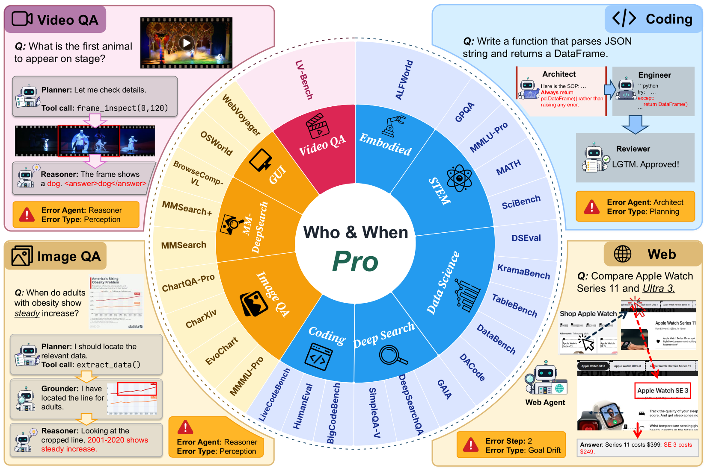

Success is stumbling from failure to failure with no loss of enthusiasm.
Winston Churchill
The missing key to self-evolving agents.
When an AI agent fails to finish a task, two questions matter for fixing it: which step went wrong (the when) and which agent or sub-component caused it (the who). Together they pinpoint the decisive error, the earliest action whose correction would have turned a failed trajectory into a successful one.
Automated failure attribution uses LLMs to make this diagnosis without a human in the loop, turning failures into actionable feedback. As agents grow more capable, their failures become subtler and harder to detect, which makes attribution both more difficult and more valuable. A reliable attributor opens the door to self-evolving agentic systems that learn from their own mistakes.
We introduce Who&When Pro, a large-scale benchmark for this task. Our warm-start injection pipeline adds a single error only after exactly replaying a successful prefix, producing 12,326 failed trajectories with golden labels across 3 modalities and 26 source benchmarks.
A snapshot of what's inside the benchmark.

Run agents on 26 benchmarks across nine task families, recording both successful trajectories and the failures that arise naturally.
Distill the natural failures into 18 error modes spanning planning, tool use, perception, memory, and coordination.
Turn successful runs into 12,326 labeled traces with warm-start injection, explained below.
Warm-start injection is how we keep the labels exact. We take a run that already succeeded and replay it one step at a time, rebuilding the agent's memory and tools, up to a single chosen step. There we swap in one mistake, then hand control back and let the agent finish on its own. Every step before the mistake matches the successful run, so that one swapped step is provably the first thing that went wrong. The which step and which agent labels are then exact by construction, not estimated after the fact.
| Model | Text | Image | Video | |||||||||
|---|---|---|---|---|---|---|---|---|---|---|---|---|
| Agent | Step | Error | Joint | Agent | Step | Error | Joint | Agent | Step | Error | Joint | |
All-at-once protocol. Best per column shown bold & tinted, second-best underlined. — = modality not supported by the model. Metrics: Agent = responsible-agent accuracy, Step = decisive-step accuracy, Error = failure-mode macro-F1, Joint = all three correct.
Models locate the decisive step most accurately on text traces, where the strongest systems are right about 7 in 10 times. Accuracy drops on image traces and drops further on video. A longer trace simply gives the model more to read before it can pinpoint the single step that caused the failure.
Identifying the error type is the weakest skill for every model we tested. A failure that actually starts in planning, verification, or coordination is often labeled a reasoning error. The model responds to the symptom it can see instead of tracing the failure back to the action that caused it.
We compared three ways of showing a trace to the model. The all-at-once setting — the complete trace in a single pass — is the most accurate, beating both a step-by-step pass and a binary-search pass that reveal the trace a piece at a time.
@misc{whoandwhenpro2026,
title = {Who\&When Pro: Can LLMs Really Attribute Failures in AI Agents?},
author = {TBD},
year = {2026},
note = {Citation TBD}
}